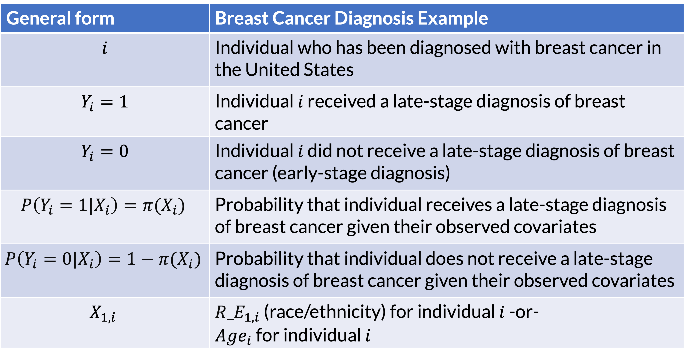
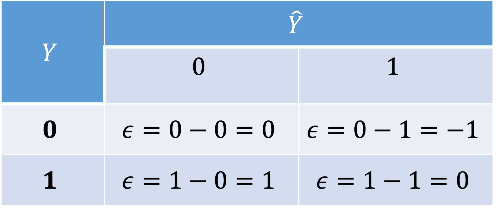
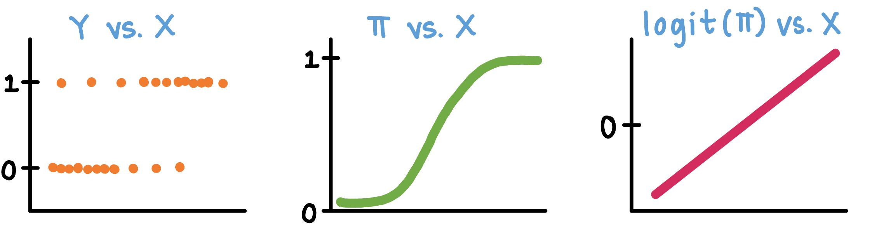
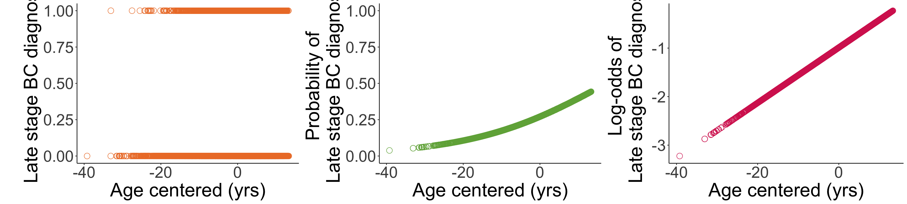

Lesson 5: Simple Logistic Regression
2024-04-15
Learning Objectives
Recognize why the tests we’ve learned so far are not flexible enough for continuous covariates or multiple covariates.
Recognize why linear regression cannot be applied to categorical outcomes with two levels
Identify the simple logistic regression model and define key notation in statistics language
Connect linear and logistic regression to the larger group of models, generalized linear model
Determine coefficient estimates using maximum likelihood estimation (MLE) and apply it in R
Learning Objectives
- Recognize why the tests we’ve learned so far are not flexible enough for continuous covariates or multiple covariates.
Recognize why linear regression cannot be applied to categorical outcomes with two levels
Identify the simple logistic regression model and define key notation in statistics language
Connect linear and logistic regression to the larger group of models, generalized linear model
Determine coefficient estimates using maximum likelihood estimation (MLE) and apply it in R
Health disparities in breast cancer diagnosis: working example
Question: Is race/ethnicity and/or age associated with an individual’s diagnosed stage of breast cancer?
- For now, consider each covariate separately
- Population: individuals who are assigned female at birth who have been diagnosed with breast cancer in the United States
- Data from the Surveillance, Epidemiology, and End Results (SEER) Program (2014-2018)
Please note that this question has been answered
You can take a look at the Breast Cancer Research Foundation’s page: Understanding Breast Cancer Racial Disparities
Big contributors to racial disparities include:
- Underrepresentation in clinical trials
- Access to healthcare
- More aggressive cancers more likely in people of Native American, African, Hispanic, and Latin American descent
Our analysis will not be new, but this kind of work has shed light on the importance of focused research on people of color to better serve people of color who develop breast cancer
- Dr. Davis focuses research on genomics and tumor microenvironment in African and African American patients
- Dr. Ambrosone focuses research on how immune cells differ between patients. Specifically on the DARC gene, which is an evolved gene that helps fight malaria, that is found at a higher rate in people with African descent.
Example: Health disparities in breast cancer diagnosis (1/2)

Example: Health disparities in breast cancer diagnosis (2/2)


Poll Everywhere Question 1
How do we determine differences in diagnosis? (1/2)
- Breast cancer diagnosis study: two variables that are categorical
- We could use a contingency table (or two-way table)

How do we determine differences in diagnosis? (2/2)
Contingency table does not work for…
- Continuous covariates
- Multiple covariates
- Logistic regression models can handle multiple covariates that are continuous or categorical

How do we determine differences in diagnosis? (2/2)
Contingency table does not work for…
- Continuous covariates
- Multiple covariates
- Logistic regression models can handle multiple covariates that are continuous or categorical
Learning Objectives
- Recognize why the tests we’ve learned so far are not flexible enough for continuous covariates or multiple covariates.
- Recognize why linear regression cannot be applied to categorical outcomes with two levels
Identify the simple logistic regression model and define key notation in statistics language
Connect linear and logistic regression to the larger group of models, generalized linear model
Determine coefficient estimates using maximum likelihood estimation (MLE) and apply it in R
Reference: individual components
Building towards simple logistic regression
Goal: model the probability of our outcome (\(\pi(X)\)) with the covariate (\(X_1\))
In simple linear regression, we use the model in its various forms: \[\begin{aligned} Y&=\beta_0+\beta_1X_1+\epsilon \\ E[Y|X] &= \beta_0 + \beta_1X_1 \\ \widehat{Y} &= \beta_0 + \beta_1X_1 \end{aligned}\]
Potential problem? Probabilities can only take values from 0 to 1
Simple Logistic Regression Model: Components
Outcome: \(Y\) - binary (two-level) categorical variable
- \(Y=1\)
- \(Y=0\)
Covariate: \(X_1\)
- For today: simple logistic regression with one covariate
- \(X_1\) can be continuous or categorical
Probability of outcome for individual with observed covariates
- \(P\left(Y=1|X\right)=\pi\left(X\right)\)
- \(P\left(Y=0|X\right)=1-\pi(X)\)
Because the expected value is a weighted average, we can say: \[\begin{aligned} E(Y|X) & = P(Y=1|X) \cdot 1 + P(Y=1|X) \cdot 0 \\ & = P(Y=1|X) \cdot 1 \\ & = P(Y=1|X) \\ & = \pi(X) \end{aligned}\]
- For categorical outcomes, \(\pi(X)\) (or \(\pi\) for shorthand), is more widely used than \(E(Y|X)\)
Can we apply OLS to our binary outcome?
- Let’s see if we can apply OLS/linear regression to our binary outcome
- What assumptions do our data need to meet in order to use OLR?
- Let’s review OLR assumptions!
Review of simple linear regression(1/2)
The (population) regression model is denoted by:
\[Y = \beta_0 + \beta_1X + \epsilon\]
Components
| \(Y\) | response, outcome, dependent variable |
| \(\beta_0\) | intercept |
| \(\beta_1\) | slope |
| \(X\) | predictor, covariate, independent variable |
| \(\epsilon\) | residuals, error term |
Review of simple linear regression (2/2)
Assumptions of the linear regression model:
Independence: observations are independent
Linearity: linear relationship between \(E[Y|X]\) and \(X\) \[E[Y|X] = \beta_0 + \beta_1 \cdot X\]
Normality and homoscedasticity assumption for residuals (\(\epsilon\)):
- Normality: residuals are normally distributed
- Homoscedasticity (equal variance): Variance of \(Y\) given \(X\) (\(\sigma_{Y|X}^2\)), is the same for any \(X\)
Which assumptions are violated if dependent variable is categorical?
- Think in terms of binary dependent variable
Violated: Linearity
The relationship between the variables is linear (a straight line):
- \(E[Y|X]\) or \(\pi(X)\), is a straight-line function of \(X\)
The independent variable \(X\) can take any value, while \(\pi(X)\) is a probability that should be bounded by [0,1]
- We cannot use linear mapping to translate \(X\) to \(\pi(X)\)


Violated: Normality
- In linear regression, \(\epsilon\) is distributed normally
- Recall that \(Y\) can take only one of the two values: 0 or 1
- And the fitted \(Y\), \(\widehat{Y}\) can also only take values 0 or 1
- Thus, \(\epsilon = Y - \widehat{Y}\) can only take values -1, 0, or 1
- Then \(\epsilon\) cannot follow a normal distribution, which would require \(\epsilon\) to have a continuum of values and no upper or lower bound

Violated: Homoscedasticity
In linear regression, \(\text{var}(\epsilon) = \sigma^2\)
- Variance does not depend on \(X\)
When Y is a binary outcome \[\begin{aligned} \text{var}\left(Y\right) & =\pi\left(1-\pi\right)\\ & = \left(\beta_0+\beta_1X\right)\left(1-\beta_0-\beta_1X\right) \end{aligned}\]
- Variance depends on \(X\)
Because variance depends on \(X\): no homoscedasticity
- Variance will not be equal across X-values
Poll Everywhere Question 2
Learning Objectives
Recognize why the tests we’ve learned so far are not flexible enough for continuous covariates or multiple covariates.
Recognize why linear regression cannot be applied to categorical outcomes with two levels
- Identify the simple logistic regression model and define key notation in statistics language
Connect linear and logistic regression to the larger group of models, generalized linear model
Determine coefficient estimates using maximum likelihood estimation (MLE) and apply it in R
How do we fix these violations?
- Question: How do we manipulate our response variable so that we fix these violations?
Answer: We need to transform the outcome so we can map differences in covariates to the two levels
- Will discuss in a few slides: called link function
How do we transform our outcome? (1/2)
How do we transform our outcome? (2/2)


Simple Logistic Regression Model
The (population) regression model is denoted by:
\[ \text{logit} (\pi) = \beta_0 + \beta_1X\]
Components
| \(\pi\) | probability that the outcome occurs (\(Y=1\)) given \(X\) |
| \(\beta_0\) | intercept |
| \(\beta_1\) | slope |
| \(X\) | predictor, covariate, independent variable |
| \(\epsilon\) | residuals, error term |
Learning Objectives
Recognize why the tests we’ve learned so far are not flexible enough for continuous covariates or multiple covariates.
Recognize why linear regression cannot be applied to categorical outcomes with two levels
Identify the simple logistic regression model and define key notation in statistics language
- Connect linear and logistic regression to the larger group of models, generalized linear model
- Determine coefficient estimates using maximum likelihood estimation (MLE) and apply it in R
Generalized Linear Models (GLMs) (1/2)
Generalized Linear Models are a class of models that includes regression models for continuous and categorical responses
- Responses follow exponential family distribution
- Helps us set up other types of regressions using each outcome’s needed transformations
Here we will focus on the GLMs for categorical/count data
Logistic regression is just a one type of GLM
Poisson regression – for counts
Log-binomial can be used to focus on risk ratio

Poll Everywhere Question 3
Generalized Linear Models (GLMs) (2/2)

GLM: Random Component
- The random component specifies the response variable \(Y\) and selects a probability distribution for it
Basically, we are just identifying the distribution for our outcome
If Y is binary: assumes a binomial distribution of Y
If Y is count: assumes Poisson or negative binomial distribution of Y
If Y is continuous: assumea Normal distribution of Y
GLM: Systematic Component
- The systematic component specifies the explanatory variables, which enter linearly as predictors \[\beta_0+\beta_1X_1+\ldots+\beta_kX_k\]
Above equation includes:
- Centered variables
- Interactions
- Transformations of variables (like squares)
- Systematic component is the same as what we learned in Linear Models
GLM: Link Function
If \(\mu = E(Y)\), then the link function specifies a function \(g(.)\) that relates \(\mu\) to the linear predictor as: \[g\left(\mu\right)=\beta_0+\beta_1X_1+\ldots+\beta_kX_k\]
- \(g\left(\mu\right)\) is the transformation we make to \(E(Y)\) (aka \(\mu\)) so that the linear predictors (right side of equation) can be linked to the outcome
The link function connects the random component with the systematic component
Can also think of this as: \[\mu=g^{-1}\left(\beta_0+\beta_1X_1+\ldots+\beta_kX_k\right)\]
GLM: Link Function

Learning Objectives
Recognize why the tests we’ve learned so far are not flexible enough for continuous covariates or multiple covariates.
Recognize why linear regression cannot be applied to categorical outcomes with two levels
Identify the simple logistic regression model and define key notation in statistics language
Connect linear and logistic regression to the larger group of models, generalized linear model
- Determine coefficient estimates using maximum likelihood estimation (MLE) and apply it in R
Reminder: Simple Logistic Regression Model
The (population) regression model is denoted by:
\[ \text{logit} (\pi) = \beta_0 + \beta_1X\]
Components
| \(\pi\) | probability that the outcome occurs (\(Y=1\)) given \(X\) |
| \(\beta_0\) | intercept |
| \(\beta_1\) | slope |
| \(X\) | predictor, covariate, independent variable |
| \(\epsilon\) | residuals, error term |
Estimation for Logistic Regression Model
- Same as linear regression model: we need to estimate the values of \(\beta_0\) and \(\beta_1\)
Maximum likelihood: yields values for the unknown parameters that maximize the probability of obtaining observed set of data
- In linear regression, this leads to least squares estimation
- Maximum likelihood estimators (MLE): values of parameters that maximize likelihood
- Likelihood function: expresses the probability of the observed data as a function of the unknown parameters
Poll Everywhere Question 4
How to find Maximum Likelihood Estimator (MLE)?
- Construct a likelihood function for an individual
- Construct the likelihood function across the sample
- Convert to log-likelihood
- Find parameter values that maximize log-likelihood (MLEs)
1. Construct a likelihood function for an individual
Within a dataset with n subjects, for the \(i\)th subject:
if \(Y_i=1\), the contribution to the likelihood function is \(\pi\left(X_i\right)\)
if \(Y_i=0\), the contribution to the likelihood function is \(1-\pi\left(X_i\right)\)
- The contribution from the \(i\)th subject to the likelihood function can be expressed as: \[\pi\left(X_i\right)^{X_i}\left[1-\pi\left(X_i\right)\right]^{1-X_i}\]
Recall
- \(Y_i\): Response variable of the \(i\)th subject
- \(X_i\): Independent variable for the \(i\)th subject
- \(\pi\left(X_i\right)=\Pr{\left(Y_i=1\middle|\ X_i\right)}\)
- \(1-\pi\left(X_i\right)=\Pr(Y_i=0|X_i)\)
2. Construct the likelihood function across the sample
- Since there are \(n\) subjects in the data, and each subject is considered independent of each other, the likelihood function for the whole data can be expressed as:
\[l(\beta_0, \beta_1) = \prod_{i=1}^{n}{\pi(X_i)^{Y_i} (1-\pi(X_i)) ^ {1-Y_i}}\]
Recall
- \(Y_i\): Response variable of the \(i\)th subject
- \(X_i\): Independent variable for the \(i\)th subject
- \(\pi\left(X_i\right)=\Pr{\left(Y_i=1\middle|\ X_i\right)}\)
- \(1-\pi\left(X_i\right)=\Pr(Y_i=0|X_i)\)
3. Convert to log-likelihood
Mathematically, it is easier to work with the log likelihood function for maximization
The log likelihood function is: \[\begin{aligned}L\left(\beta_0,\beta_1\right) &=\ln{\left(l\left(\beta_0,\beta_1\right)\right)} \\ & = \sum_{i=1}^{n}\bigg[Y_i\cdot\text{ln}[\pi(X_i)] + (1-Y_i)\cdot\text{ln}[1-\pi(X_i)] \bigg] \end{aligned}\]
Recall
- \(Y_i\): Response variable of the \(i\)th subject
- \(X_i\): Independent variable for the \(i\)th subject
- \(\pi\left(X_i\right)=\Pr{\left(Y_i=1\middle|\ X_i\right)}\)
- \(1-\pi\left(X_i\right)=\Pr(Y_i=0|X_i)\)
4. Find MLEs that maximize log-likelihood
To find \(\beta_0\) and \(\beta_1\) that maximizes \(L\left(\beta_0,\beta_1\right)\):
- We differentiate \(L\left(\beta_0,\beta_1\right)\) with respect to \(\beta_0\) and \(\beta_1\)…
- And set the resulting expression to zero
Such equations are called likelihood equations.
- \(\sum\left[Y_i-\pi\left(X_i\right)\right]=0\)
- \(\sum\ X_i\left[Y_i-\pi\left(X_i\right)\right]=0\)
In logistic regression, there is no “closed form” solution to the above equations
Need to use iterative algorithm, such as iteratively reweighted least squares (IWLS) algorithm, should be used to find the MLEs for logistic regression
Poll Everywhere Question 5
How do perform MLE in R?
glm()function automatically does MLE for you- For logistic regression with a binary outcome, we need to set the
familywithinglm()to “binomial” which will automatically set the logit link
- For logistic regression with a binary outcome, we need to set the
You can explore other algorithms (other than IWLS) to maximize the likelihood
- Pretty good Cross Validated post on algorithms in
glm()
- Pretty good Cross Validated post on algorithms in
Example: Breast cancer diagnosis (1/3)
- Let’s start with simple logistic regression with late stage breast cancer diagnosis as the outcome and age as our independent variable
We want to fit: \[\text{logit}(\pi(Age)) = \beta_0 + \beta_1 \cdot Age\]
- Don’t forget: \(\pi(Age) = P(Y=1 | Age) = P(\text{Late stage BC diagnosis}| Age)\)
Example: Breast cancer diagnosis (2/3)
Call:
glm(formula = Late_stage_diag ~ Age_c, family = binomial, data = bc)
Coefficients:
Estimate Std. Error z value Pr(>|z|)
(Intercept) -0.989422 0.023205 -42.64 <2e-16 ***
Age_c 0.056965 0.003204 17.78 <2e-16 ***
---
Signif. codes: 0 '***' 0.001 '**' 0.01 '*' 0.05 '.' 0.1 ' ' 1
(Dispersion parameter for binomial family taken to be 1)
Null deviance: 11861 on 9999 degrees of freedom
Residual deviance: 11510 on 9998 degrees of freedom
AIC: 11514
Number of Fisher Scoring iterations: 4Example: Breast cancer diagnosis (3/3)
Translate the results back to an equation!
Just going to pull the coefficients so I have a reference as I create the fitted regression model:
Estimate Std. Error z value Pr(>|z|)
(Intercept) -0.9894225 0.0232055 -42.63742 0.000000e+00
Age_c 0.0569645 0.0032039 17.77974 1.014557e-70- Fitted logistic regression model: \[\text{logit}(\pi(Age)) = -0.989 + 0.057 \cdot Age\]
We will need to reverse the transformation process in slide 24-25 to find the odds ratios
Example: Breast cancer diagnosis (3/3)
Translate the results back to an equation!
Just going to pull the coefficients so I have a reference as I create the fitted regression model:
Estimate Std. Error z value Pr(>|z|)
(Intercept) -0.9894225 0.0232055 -42.63742 0.000000e+00
Age_c 0.0569645 0.0032039 17.77974 1.014557e-70- Fitted logistic regression model: \[\text{logit}(\pi(Age)) = -0.989 + 0.057 \cdot Age\]
We will need to reverse the transformation process in slide 24-25 to find the odds ratios
- Will do in next week’s lessons
- This is the fitted line:

Learning Objectives
Recognize why the tests we’ve learned so far are not flexible enough for continuous covariates or multiple covariates.
Recognize why linear regression cannot be applied to categorical outcomes with two levels
Identify the simple logistic regression model and define key notation in statistics language
Connect linear and logistic regression to the larger group of models, generalized linear model
Determine coefficient estimates using maximum likelihood estimation (MLE) and apply it in R
Lesson 5: Simple Logistic Regression